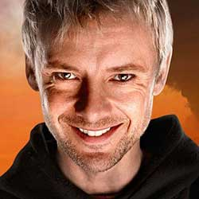

|
| Home The Doctors The Companions The Villians Show History |
|
|
The MasterThe Master is a recurring character in the British science fiction television series Doctor Who and its associated spin-off works. He is a renegade alien Time Lord and the archenemy of the title character the Doctor. The Master has been played by multiple actors since the character's introduction in 1971. Within the show, this is varyingly explained as the Master taking possession of other characters' bodies, or as a consequence ofregeneration, a biological attribute allowing Time Lords to survive fatal injuries. Roger Delgado played the Master from the character's introduction in 1971 until the actor's death in 1973.[1] Peter Pratt and Geoffrey Beevers played a physically decayed version of the Master under heavy prosthetics. Anthony Ainley played the following incarnation from 1981 until the show's 1989 cancellation. In the 1996 TV movie, the character was played briefly by Gordon Tipple and then by Eric Roberts. Following the series revival in 2005, Derek Jacobi provided the character's re-introduction in the 2007 episode "Utopia". During that story the role was then assumed by John Simm.[2]
|
|
Ann Marie Skjold Ashly Wilkins |
Content Derived from Wikipedia Doctor Who Page |